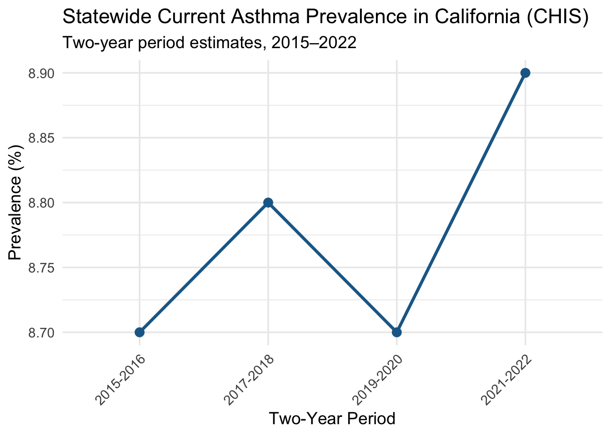
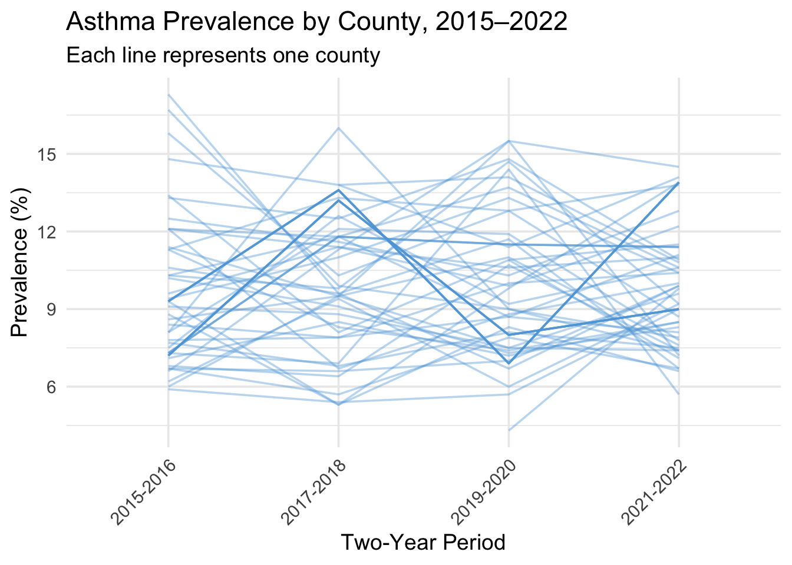
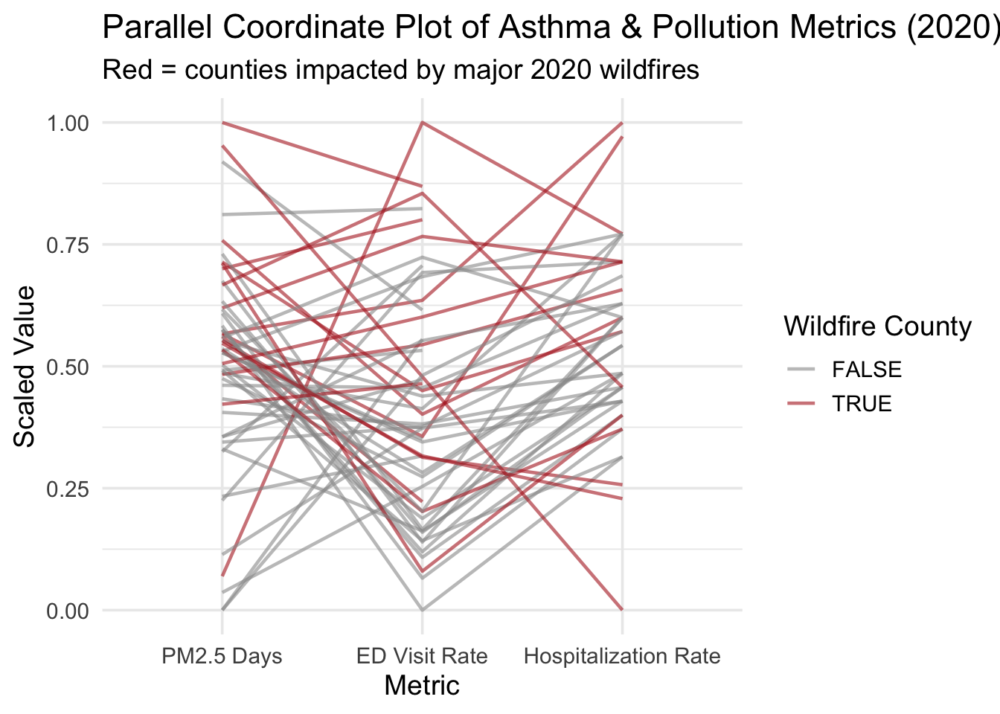

Across California, the spatial patterns of asthma prevalence and emergency department (ED) visit rates closely parallel the distribution of PM2.5 pollution. Counties with the highest asthma burden—particularly in the Central Valley and rural Northern California—also experience the greatest number of days with elevated PM2.5, reflecting persistent exposure to particulate pollution. This overlap suggests that chronic air quality challenges, intensified by recent wildfire seasons, likely contribute to worse respiratory outcomes in these regions.
The following plots examine this relationship more closely by visualizing geographic alignment, temporal trends, and distributional patterns across counties.
6.1 Set Up
Libraries:
Code
library(ggplot2)library(dplyr)
Attaching package: 'dplyr'
The following objects are masked from 'package:stats':
filter, lag
The following objects are masked from 'package:base':
intersect, setdiff, setequal, union
Code
library(tigris)
To enable caching of data, set `options(tigris_use_cache = TRUE)`
in your R script or .Rprofile.
Code
library(sf)
Linking to GEOS 3.13.0, GDAL 3.8.5, PROJ 9.5.1; sf_use_s2() is TRUE
── Conflicts ────────────────────────────────────────── tidyverse_conflicts() ──
✖ dplyr::filter() masks stats::filter()
✖ dplyr::lag() masks stats::lag()
ℹ Use the conflicted package (<http://conflicted.r-lib.org/>) to force all conflicts to become errors
Warning: Removed 13 rows containing non-finite outside the scale range
(`stat_smooth()`).
Warning: Removed 13 rows containing missing values or values outside the scale range
(`geom_point()`).

Across all three outcomes—ED visits, hospitalizations, and asthma prevalence—there is no strong linear association with PM2.5 exposure in 2020. The scatter is wide for each outcome, and the fitted regression lines are almost flat (slightly negative), indicating that PM2.5 levels alone do not predict county-level asthma burden in this dataset. This suggests that other factors (healthcare access, socioeconomic status, baseline disease burden, or chronic exposure patterns) likely play a larger role in explaining variation across counties.
#Asthma ED Visits in High vs. Low PM2.5 Counties
Code
density_data <- asthma_2020 |>filter(!is.na(pm25_days), !is.na(ed_visit_rate)) |>mutate(pollution_group =ifelse(pm25_days >median(pm25_days, na.rm =TRUE),"High PM2.5","Low PM2.5") )ggplot(density_data, aes(x = ed_visit_rate, fill = pollution_group)) +geom_density(alpha =0.35) +scale_fill_manual(values =c("#ef8a62", "#67a9cf")) +labs(title ="Distribution of Asthma ED Visit Rates in High vs Low PM2.5 Counties (2020)",x ="ED Visit Rate (per 10,000)",fill ="PM2.5 Group" ) +theme_minimal(base_size =13)

The distribution of ED visit rates does not significantly differ in mean between high- and low-PM2.5 counties, which aligns with the weak correlation observed earlier. However, high-PM2.5 counties show a wider spread of ED visit rates, suggesting that pollution alone does not explain county-level asthma burden. Other structural factors—such as rural healthcare access, socioeconomic conditions, or baseline prevalence—likely contribute to the variability.
Warning: Removed 13 rows containing missing values or values outside the scale range
(`geom_line()`).

The parallel coordinate plot compares PM2.5 exposure, asthma ED visits, and hospitalization rates across California counties in 2020, highlighting wildfire-affected counties. Although wildfire counties show higher scaled PM2.5 levels, this does not translate into higher asthma outcomes: wildfire and non-wildfire counties overlap heavily on the ED and hospitalization axes. This aligns with earlier analyses showing weak or non-significant pollution–asthma associations. Overall, despite major smoke events, county-level asthma outcomes did not systematically increase, possibly reflecting pandemic-era behavior changes or the limitations of aggregated county data.